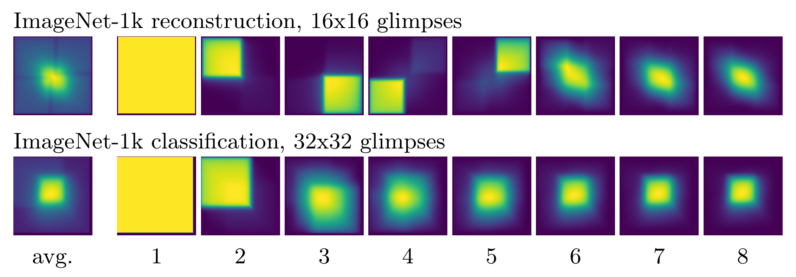

Toward Active-Vision Foundation Models


 Lamarck Labs
Lamarck Labs
Deep neural networks as models of vision

Categorization performance
Noise-corrected IT predictivity

DINOv3


DINOv3 ViT-B/16, Siméoni et al., TMLR 2026
DINOv3 and the brain


Late alignment with higher-order cortical areas

What's missing?
A brief history of deep active computer vision


Mnih et al. 2014, NeurIPS
The wide gap between passive and active computer vision


What's in an active-vision model?
Seeing
Memory
Observer
Choosing where to look
Action selection
Policy
No policy can make up for a poor observer. A general-purpose observer lets you use any policy.
Where people look depends on their goal


Toward Active-Vision Foundation Models
| Passive foundation models | Prior active models | Active-Vision Foundation Models | |
|---|---|---|---|
| Instantaneous vision | ✓ | ✓ | ✓ |
| Memory | ✗ | ✓ | ✓ |
| Visuospatial intelligence | ✓ | ✗ | ✓ |
| Task-agnostic | ✓ | ✗ | ✓ |
| Policy-agnostic | — | ✗ | ✓ |
Canvas Vision Transformer

Toward Active-Vision Foundation Models


 NeurIPS 2026
NeurIPS 2026
 arxiv.org/abs/2603.22570
arxiv.org/abs/2603.22570
Architecture
Pretraining
Experiments
Processing a glimpse with a Vision Transformer (ViT)
Vision
Transformer
Transformer
Integrating visual information across viewpoints


01p(table)
The Canvas Vision Transformer architecture

Scene-Relative Rotary Position Embeddings (SR-RoPE)
Glimpse patchesCanvas patches
Canvas Attention
Architecture
Pretraining
Experiments
Policy-agnostic dense latent distillation
Glimpse
(x, y, s)
Prediction
MSE
TargetDINOv3, whole scene
…
Glimpse 1


Glimpse 2


Glimpse 3


Glimpse 21


Pretraining policies
Pretraining CanViT-B
13.2 millionImageNet-21k scenes
1 billionglimpses
1GPU
DINOv3 7B
61,440 H100-hours
CanViT-B
166 + 8 H100-hours
Integrating visual information across viewpoints

01p(table)
Architecture
Pretraining
Experiments
Coarse-to-Fine (C2F) and Fine-to-Coarse (F2C)
Entropy-Guided Coarse-to-Fine (EG-C2F)
Accuracy by viewing policy
Learning where to look
Pretraining
1 billion glimpses
Policy learning
640 thousand glimpses
A new active-vision state of the art
| Model | ADE20K mIoU (%) | ImageNet-1k top-1 (%) |
|---|---|---|
| Saccader | — | 75.0 |
| AME (MAE) | 24.4 | — |
| AME (SETR) | 27.6 | — |
| AdaGlimpse | 25.7 | 77.5 |
| AdaptiveNN | — | 82.2 |
| CanViT-B | 45.9† | 81.1† / 84.5 |
Open-source and easy to use
uv add canvit-pytorch
scene.jpg


logits.argmax(1)

Toward CanViT 2
CanViT
Static scenes (images)
Uniform acuity
CanViT 2
Dynamic scenes (videos)
Eccentricity-dependent acuity
 Paper
Paper Code
Code
 Models
Models


Backup
What's in an active-vision model?
Seeing
Instantaneous vision
making sense of what it sees at a given moment
Memory
updating a persistent, evolving understanding of the scene
Observer
Choosing where to look
Action selection
deciding where and at what zoom level to look next
Policy
No policy can make up for a poor observer. A general-purpose observer lets you use any policy.
Pretraining desiderata
Robust to any viewing policy
Policy-agnostic
Rich knowledge of the visual world, without enormous compute
Dense latent distillation
Before knowing where to look,
we should know how to see.
Toward AVFMs for Neuro-AI


CanViT in action
AdaGlimpse's learned viewing policies

Extrapolation to unobserved regions
DINOv3, each glimpse
CanViT, far end
CanViT, near end
CanViT, both
Classes


p(table)


Image classification and semantic segmentation
 English springer
English springerAccuracy against training compute
Not counted: training the teachers and pretrained weights each model starts from.
The canvas
readwrite
ADE20K accuracy against inference compute
Passive and active models over time
English springer
CanViT-B among passive and active models over time
Spatial coverage and perception of detail


CanViT architecture diagram